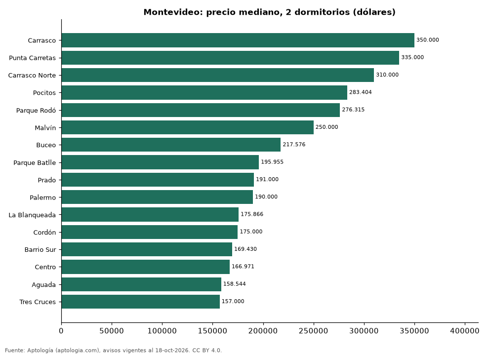

Dónde cuesta más y menos comprar un apartamento de 2 dormitorios en Montevideo: ranking de barrios (octubre 2026)
Estudio con datos abiertos (CC BY 4.0). Versión original: https://www.aptologia.com/estudios/venta-apartamentos-de-2-dormitorios-por-barrio-montevideo-2026
En Montevideo, un apartamento de 2 dormitorios cuesta USD 350.000 en la mediana en Carrasco, el barrio más caro, y USD 157.000 en Tres Cruces, el más barato: 2,2 veces menos. Comparamos 16 barrios con al menos 30 avisos de 2 dormitorios.
Resumen: analizamos 1.553 apartamentos en venta de 2 dormitorios en 16 barrios de Montevideo.
Actualizado: 18 de octubre de 2026 (datos del 18 de octubre de 2026) · Próxima actualización: mensual.

Resumen
| Indicador | Valor |
|---|---|
| Más caro | Carrasco: USD 350.000 |
| Más barato | Tres Cruces: USD 157.000 |
| Diferencia | 2,2 veces |
| Barrios | 16 |
Precio de un apartamento de 2 dormitorios por barrio
| Barrio | Precio (mediana) | Rango típico (P25–P75) | Área mediana (m²) | Avisos |
|---|---|---|---|---|
| Carrasco | USD 350.000 | USD 281.000 – USD 435.356 | 100 | 85 |
| Punta Carretas | USD 335.000 | USD 292.404 – USD 370.240 | 81 | 79 |
| Carrasco Norte | USD 310.000 | USD 259.916 – USD 396.900 | 89 | 65 |
| Pocitos | USD 283.404 | USD 247.450 – USD 348.454 | 82 | 218 |
| Parque Rodó | USD 276.315 | USD 189.412 – USD 305.625 | 81 | 30 |
| Malvín | USD 250.000 | USD 223.000 – USD 287.000 | 79 | 175 |
| Buceo | USD 217.576 | USD 178.060 – USD 253.325 | 72 | 90 |
| Parque Batlle | USD 195.955 | USD 162.385 – USD 224.150 | 64 | 61 |
| Prado | USD 191.000 | USD 151.903 – USD 210.000 | 70 | 56 |
| Palermo | USD 190.000 | USD 162.164 – USD 206.550 | 65 | 35 |
| La Blanqueada | USD 175.866 | USD 162.529 – USD 196.092 | 68 | 152 |
| Cordón | USD 175.000 | USD 157.400 – USD 196.000 | 67 | 217 |
| Barrio Sur | USD 169.430 | USD 149.529 – USD 179.950 | 64 | 38 |
| Centro | USD 166.971 | USD 155.000 – USD 180.600 | 69 | 95 |
| Aguada | USD 158.544 | USD 133.250 – USD 166.192 | 58 | 52 |
| Tres Cruces | USD 157.000 | USD 138.552 – USD 186.160 | 67 | 105 |
Medianas del precio pedido; solo barrios con 30 avisos o más.
Preguntas frecuentes
¿Cuánto cuesta comprar un apartamento de 2 dormitorios en Carrasco? USD 350.000 en la mediana (octubre de 2026); la mitad central entre USD 281.000 y USD 435.356.
¿Dónde es más barato comprar un apartamento de 2 dormitorios en Montevideo? En Tres Cruces: USD 157.000 en la mediana.
Metodología
- Fuente: exportes nocturnos de la base de datos de Aptología (aptologia.com) del 18 de octubre de 2026: avisos vigentes de vivienda en portales inmobiliarios de 13 países, recogidos por Aptología y vistos en línea entre el 11 y el 18 de octubre de 2026. Corte: 18 de octubre de 2026.
- Depuración: se eliminan duplicados exactos (misma ciudad, zona, tipo, precio, moneda, área, habitaciones y baños) y los precios fuera del percentil 1–99 de cada país, operación, moneda y tipo; el precio por m² usa solo avisos con área declarada entre 12 y 2.000 m² y también se recorta al P1–P99.
- Qué se mide: precios pedidos (publicados), no precios de cierre. En arriendo, el canon mensual sin administración, gastos comunes ni condominio.
- Muestra mínima: cada cifra publicada se apoya en al menos 30 avisos; las celdas con menos se omiten.
- Monedas: nunca se mezclan avisos de monedas distintas sin convertirlos. Conversión a dólares con la tasa de mercado de ExchangeRate-API (open.er-api.com, actualización del 18 Oct 2026): 1 USD = 3.182,80 COP, 1 USD = 18,47 M.N, 1 USD = 5,09 BRL, 1 USD = 3,44 PEN, 1 USD = 982,44 CLP, 1 USD = 1.514,57 ARS, 1 USD = 40,20 UYU, 1 USD = 5.705,37 PYG, 1 USD = 61,27 DOP, 1 USD = 0,89 EUR, 1 USD = 11,72 BOB; la UF chilena a 41.178,64 CLP (mindicador,cl. 18-oct-2026). Los avisos publicados en dólares se usan tal cual.
- Monedas: en cada ciudad y operación se usa solo la moneda mayoritaria de los avisos (los avisos en otra moneda se excluyen) y la mediana se convierte a dólares con la tasa citada; nunca se promedian avisos de monedas distintas.
- Limitaciones: la cobertura depende de los portales que recorre Aptología en cada país y es mayor en las ciudades grandes y en los segmentos medio-alto y alto; el área es la que declara el aviso, sin verificar; los nombres de zona vienen de los portales.
- Privacidad: solo se publican agregados; no se publica ningún dato personal, enlace a avisos ni nombre de anunciante.
- Datos abiertos: datos.csv, licencia CC BY 4.0.
Cómo citar
Pinzón Pineda, D. M. (2026). Dónde cuesta más y menos comprar un apartamento de 2 dormitorios en Montevideo: ranking de barrios (octubre 2026). Aptología (aptologia.com). https://github.com/elbroker/aptologia-datos/tree/main/estudios/venta-apartamentos-de-2-dormitorios-por-barrio-montevideo-2026. Datos: datos.csv, licencia CC BY 4.0.